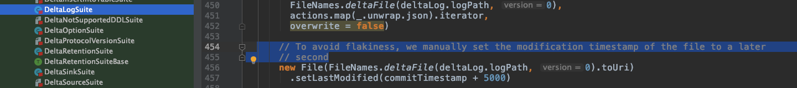

🎉 Welcome to the first part of Delta Lake essential fundamentals! 🎉
What is Delta Lake ?
Delta Lake is an open-source storage layer that brings ACID transactions to Apache Spark™ and big data workloads.
DeltaLake open source consists of 3 projects:
- detla - Delta Lake core, written in Scala.
- delta-rs - Rust library for binding with Python and Ruby.
- connectors - Connectors to popular big data engines outside Spark, written mostly in Scala.
Delta provides us the ability to “travel back in time” into previous versions of our data, scalable metadata - that means if we have a large set of raw data stored in a data lake, having metadata provides us with the flexibility needed for analytics and exploration of the data. It also provides a mechanism to unify streaming and batch data.
Schema enforcement - handle schema variations to prevent insertion of bad/non-compliant records, and ACID transactions to ensure that the users/readers never see inconsistent data.
It's important to remember that Delta Lake is not a DataBase (DB), yes, just like Apache Kafka is not a DB.
It might 'feel' like one due to the support of ACID transactions, schema enforcements, etc.
But it's not.
Part 1 focuses on ACID Fundamentals:
ACID Fundamentals in Delta Lake:
Let’s break it down to understand what each means and how it translates in Delta:
Atomicity
The transaction succeeded or not, all changes, updates, deletes, and other operations either happened as a single unit or not. Think Binary, there is only yes or no - 1 or 0. In Delta, it means that a commit of a transaction happened, and a new transaction log file was written. Transaction log file name example - 000001.json, the number represents the commit number.
Consistency
A transaction can only bring the DB from one state to another; data is valid according to all the rules, constraints, triggers, etc. The transaction itself can be consistent but incorrect. To achieve consistency, DeltaLake relay on the commit timestamp that comes from the storage system modification timestamps. If you are using cloud provider storage such as Azure blob or AWS S3, the timestamp will come from the storage server.
Isolation
Transactions taking place concurrently result in an equals state as if transactions would have been executed sequentially. This is the primary goal of Concurrency control strategies. In Delta, after 10 commits, there is a merging mechanism that merges these commits into a checkpoint file. The checkpoint file has a timestamp. 1 second is being added to the modification timestamp to avoid flakiness. This is how it looks in the code base of Delta:

Durability
Once a transaction has been committed, it will remain committed even if the system fails. Think about writing to disk vs. writing to Ram memory. A machine can fail, but if the commit data was written to disk, it could be restored. Delta writes all the commits in a JSON file directly to the storage; it is not left floating in RAM space for too long.
What’s next?
After understanding ACID basics and a bit about the Transaction Log (aka DeltaLog), you are ready to take the next chapter!
In Diving deeper into to DeltaLog, how it looks like on disk, and the open-source code you need to be familiar with.
As always, I would love to get your comments and feedback on Adi Polak 🐦.
If you would like to get monthly updates, consider subscribing.